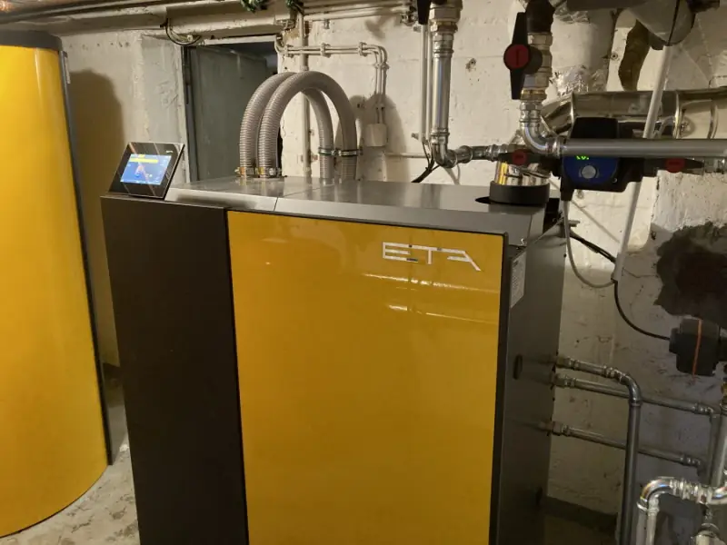
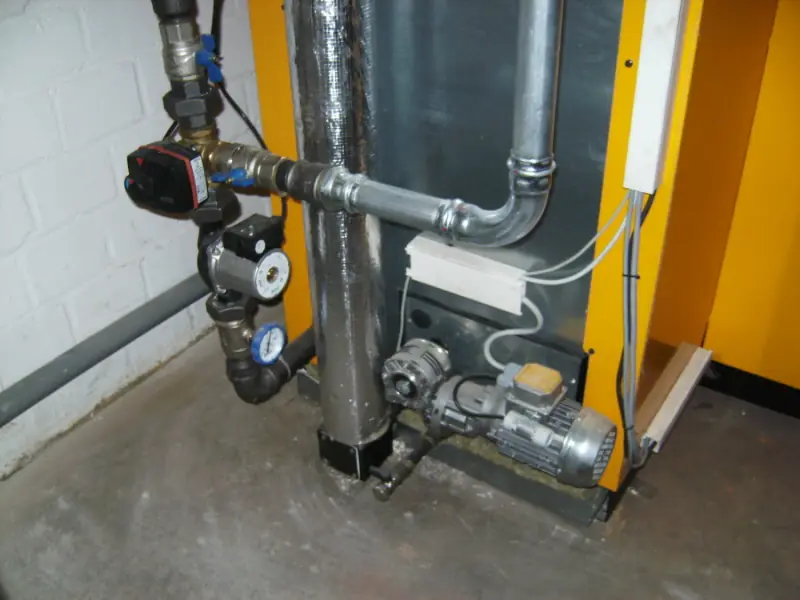
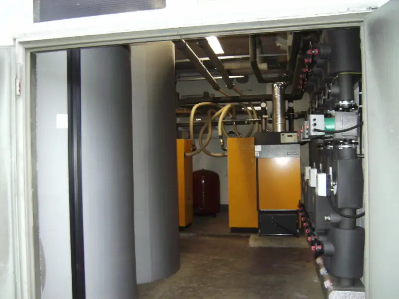
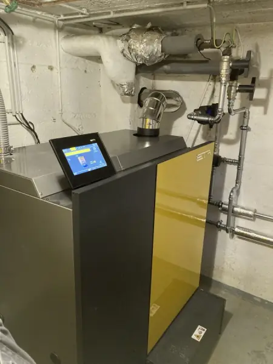

Heizungstechnik ist ein Begriff, der frösteln lässt: früher wegen der schweren Kessel und Heizkörper, dann weil alles komplizierter wurde, und heute wegen der Kosten. Der Betrieb unterstützt bei der Suche nach einem geeigneten System — die Entscheidung nimmt er niemandem ab.
Zwei Punkte, die seit Jahren Fragen auslösen
- Die Austauschpflicht für Anlagen, die älter als 30 Jahre sind.
- Die ErP-Vorgabe zum Wegfall der klassischen Niedertemperaturkessel und die Verpflichtung zur Brennwerttechnik.
Beides steht so auf der bestehenden Website des Betriebs. Ob es Ihre Anlage betrifft, hängt vom Typenschild ab — hier eine erste Einordnung:
Wie alt ist Ihre Heizung?
Hydraulik geht auch einfach
Eines der größten Einsparpotenziale in Heizungsanlagen liegt in der Hydraulik. Pumpen, Regler und Dämmungen sind die eine Seite, das Nutzerverhalten die andere. Schon kleine Änderungen sparen spürbar — das ist die Kernaussage der bestehenden Heizungsseite.
Wartung ohne Festpreis
Ein üblicher Wartungsvertrag listet Tätigkeiten auf, die bei jeder Wartung zu erfolgen haben — auch wenn sie nicht immer erforderlich sind. Der Betrieb macht das anders: Die Serviceverträge enthalten eine Aufstellung der auszuführenden Arbeiten, aber keine Festpreise. Abgerechnet wird nach den feststehenden Stundenverrechnungssätzen zuzüglich Material und Nebenkosten.
Alle vier Angaben stehen wörtlich auf der Seite „Leistungen“ der bestehenden Website. Konkrete Stundensätze nennt diese Vorschau nicht, weil sie dort nicht veröffentlicht sind.




Sanitärtechnik
Für das Bad arbeitet der Betrieb mit Richter + Frenzel in Aachen zusammen. Ein Termin vor Ort ist möglich — dort gibt es nicht nur Beratung, sondern auch Ideen, wie ein Badezimmer aussehen kann. Und meistens eine Tasse Kaffee.
Für Betreiber von Trinkwasseranlagen weist der Betrieb ein Zertifikat zur Trinkwasserhygiene aus und empfiehlt die regelmäßige Untersuchung der Anlagen.
Klimatechnik
Klimatechnik führt der Betrieb auf seiner Startseite als eigenen Bereich. Eine ausführliche Leistungsbeschreibung steht dort nicht — deshalb steht hier auch keine. Was konkret möglich ist, klärt am schnellsten ein Anruf.
Nächster Schritt
Anlage prüfen lassen?
Ein Blick auf das Typenschild und die Hydraulik sagt mehr als jede Ferndiagnose. Rufen Sie an — oder schreiben Sie kurz, welcher Kessel bei Ihnen steht.